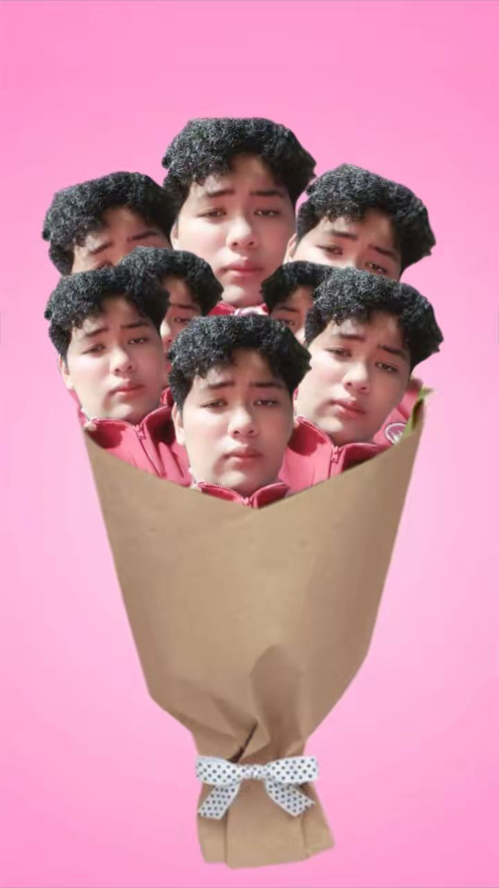

Happy-Happy Valentines!!! 💕
It's been hard for us pero umabot pa tayo hanggang dito. Grabe valentines naaa,
tagal na natin, legal na ba, un ang tanong. Hmmm, ano kaya pwedeng physical na gift
for youu hmmmmmm. Actually, dko alam e, bracelet? necklace? perfume? DIY?
ih kakatamad.
Pero how are you naman like be honest to me, I don't like
“I'm fine, I'm okay, Gwenchana” ih lala. Stress noh stressful.
Ako din stressful pero ket busy pako sa school, I still made this
ano parang website para fun-fun lang and if ever I can't buy you any
edi this is my gift ganern.
Uhmm hmm ano pa ba pwedeng sabihin. Ah de wait, ahhh, de chariz
ano wla tlga naku po. Ay, advices nlang sguro kasi stressful na dba,
nakakatulog ka pa ba ng maayos?? Ako, minsan minsan lang yah.
But how about youuu?? Pano ka na lalaki nyan charingz.
Kelan na kaya kita makaka-usap ng maayos. I miss our chikahansss.
Malapit na bday mo and syempre our anniv.
Magpapa-bless bako sa first sunday ng march for our anniv?
Hindi na sunod-sunod ung idea ng message ko ah.
I'm making this while making the code den e.
Anyways, may gift nako, dko alam kung kelan ko mabibigay
kasi medj big for my pocket e pero medj small to hide also.
Pero I hope you love it, kase yan na ung kapalit sa necklace mu.
Awwww, miss mo na ba un?? Best gift ko un ih, sana mahanap.
Huwaw.
So, syempre we haven't talk alot so why not kwento kwento nlang
me ng life ko dba dba. Okay uhm, happy naman ako yes kasi
na-uupdate naman kita sa sendthesong dba dba.
Do I still miss you? Yes, I do, pero not that much muna baka
umiyak ako kaka-relapse na bumalik sa dati.
I'm doing fine naman sa school ata? For my quizzes medj bumababa
na ng unti pero tumataas ung iba kong bumababa last quarter.
ay 93 po ako 2nd quarter.
I lost my sci-cal pero d pako nagpapabili kasi baka masermonan
pako tas buti nlang walang quiz ng math tas uhm 2 weeks na
atang nawawala un including this week. Mahirap tlga pag walang
sci-cal, parang nawalan ako ng gana mag science pati math
nung nawawala ung sci-cal ko hayyss.....
Sinabi ko na, wag na po nating pag-usapan. Sge next page.
— Love, Baby Ryry